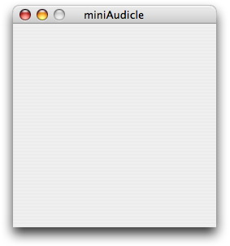
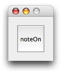
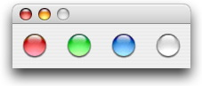

MAUI_Element
MAUI Element base class. It is possible to instantiate this class directly, but it will not create anything useful.
class hierarchy
Object -> Event -> MAUI_Element
member functions
- void display()
- Causes the element to become visible. Must be called at least once to make the element become visible, as all elements are created hidden.
- void destroy()
- Closes the element and deallocates any associated memory.
- string name( string s )
- Sets the name of the element to s.
- string name()
- Returns the name of the element.
- void size( float w, float h )
- Sets the width and height of the element.
- float width()
- Returns the width of the element.
- float height()
- Returns the height of the element.
- void position( float x, float y )
- Sets the position of the element, with respect to its parent View.
- float x()
- Returns the x coordinate of the element.
- float y()
- Returns the y coordinate of the element.
- Event onChange()
- Returns an event. Whenever this element is changed, this event will
broadcast to all shreds waiting on it. Note that onChange() simply returns
the instance of the MAUI_Element, such that
element.onChange() => now;
is equivalent toelement => now;
MAUI_View
View class for grouping elements into a single window. The only way that a MAUI_Element can be displayed is through a MAUI_View. However, elements not explicitly assigned to a MAUI_View will create their own implicit MAUI_View.
Currently it is undefined behavior to nest a MAUI_View within another MAUI_View. Additionally, it is undefined behavior to add a MAUI_Element to more than one MAUI_View, or to the same view more than once.
class hierarchy
Object -> Event -> MAUI_Element -> MAUI_View
member functions
- void addElement( MAUI_Element e )
- Adds an element to the MAUI_View.
examples
MAUI_Slider

Graphical slider class. Additionally, this element maintains two text fields, displaying the title and current value of the slider.
class hierarchy
Object -> Event -> MAUI_Element -> MAUI_Slider
member functions
- float value()
- Returns the current value.
- float value( float v )
- Sets the current value as a float, and returns the new current value.
- void range( float min, float max )
- Sets the minimum and maximum values of the slider.
- float min()
- Returns the minimum value of the slider.
- float max()
- Returns the maximum value of the slider.
- int precision( int p )
- Sets the precision of the value display of the slider. Returns the new precision. The precision is used to determine the maximum number of significant digits of the bestFormat displayFormat, and the number of digits after the decimal point in the decimalFormat and scientificFormat display formats.
- int precision()
- Returns the precision of the value display of the slider. The default precision is 4.
- int displayFormat( int df )
- Sets the display format, and returns the new display format. For a list of meaningful values to pass as a display format, please see member variables below.
- int displayFormat()
- Returns the current display format for the value display of the slider.
member variables
- static const int bestFormat
- Corresponds to a slider value display format in which the most appropriate display format is selected automatically, depending on the value of the slider. For example, using bestFormat and a precision of 4, a value of 20 would be displayed as 20, 20.4 would be displayed as 20.4, and 200000000000000 would display as 2e14. The precision specifies the maximum number of significant digits.
- static const int integerFormat
- Corresponds to a value display format in which the slider value is displayed as an integer. The precision is unused in this display format.
- static const int decimalFormat
- Corresponds to a value display format in which the slider value is displayed as a decimal. The precision specifies the number of digits appearing after the decimal point.
- static const int scientificFormat
- Specifys the value display format in which the value is displayed in scientific format. The precision specifies the number of digits appearing after the decimal point.
examples
MAUI_Button
Graphical button class, maintaining an optional title in the center of the button.
class hierarchy
Object -> Event -> MAUI_Element -> MAUI_Button
member functions
- int state()
- Returns the current state of the button. 0 represents an unpushed button, and a non-zero value represents a pushed button.
- int state( int s )
- Sets the current state of the toggle button. 0 represents an unpushed button, and a non-zero value represents a pushed button. Returns the new state of the button.
- void pushType()
- Sets the button to type to a push button. Push buttons stay pushed as long as the user holds the mouse button down. The event is broadcasted once when the mouse is pressed over the button, and once when the mouse is released over the button.
- void toggleType()
- Sets the button type to a toggle button. Toggle buttons enter the pushed state when they are pushed once, and exit the pushed state after they are pushed once more. The event is broadcasted each time the mouse is pressed over the button. Changing the button type of a toggle button will reset its state to the unpushed state.
examples
MAUI_LED
User interface element to simulate a light emitting diode (LED). Three colors are available. All LED elements have the same size; increasing their height and width will increase the margin around the LED.
class hierarchy
Object -> Event -> MAUI_Element -> MAUI_LED
member functions
- void light()
- Sets the LED to the lit, or colored, state.
- void unlight()
- Sets the LED to the unlit, or uncolored, state.
- int color( int c )
- Sets the color of the LED, and returns the new color. For a list of meaningful values to pass as the color, see member variables.
- int color()
- Returns the color of the LED.
member variables
- static const int red
- Corresponds to a red colored LED.
- static const int green
- Corresponds to a green colored LED.
- static const int blue
- Corresponds to a blue colored LED.